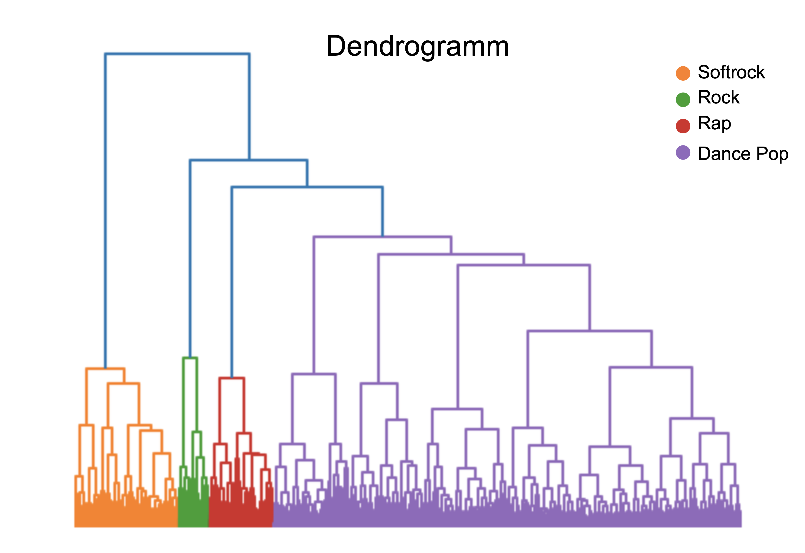
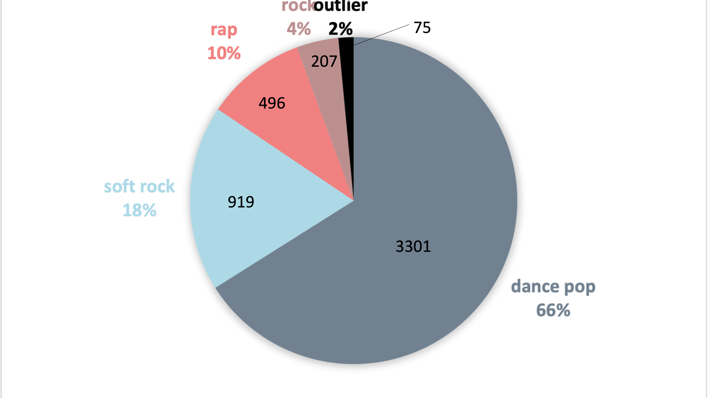

How did popularity of the genres change over time?
Simplify your music!
Spotify's multitude of genres Clustered into four distinct groups
A
dendrogram
represents the hierarchical structure of objects. In our case, we have represented the songs in
such a dendrogram to show the similarities of them. The analysis provides at the same time a basis and a
control for further clustering of the songs into genres. The basis for the dendrogram is again the audio
features. Based on the dendrogram, we see that four clusters emerge, which can be separated from each
other.
This number was also used as the basis for the clustering algorithms.

We want our own genres!
Spotify offers an enormously high number of different genres. For the songs used in our analysis alone,
there
were over 1600 different genres. Spotify differentiates very meticulously into genres like "pittsburgh
rap",
"pop rap", "rap", "southern hip hop", for example. Therefore, we decided to create our own classes based
on
the features. The clustering was done over the normalized feature vectors. For the visualization a PCA
was
performed afterwards, to reduce the feature vectors to three dimensions for plotting purposes.
The four resulting cluster were named after the genre, which occurred
most frequently in the respective cluster.
Using these four classes, we can compare the change over time much better than with 1600+ different
genres.

The return of the rap god?
Over time, the soft rock cluster saw a clear decline in its share in the top hits. Pop music always
seems to be
in
the majority. Rap music had a spike in popularity in early 2000s and is again on the rise.
Time for some time travel
Back to the future - does this affect our rap genre?
Here we see how the features of the songs of the future. We have added these in the cluster and
recognize a trend from dance pop to rap there as well. Shown are the potential predictions for the years
2020 to 2030.